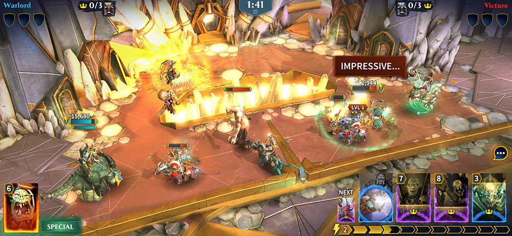
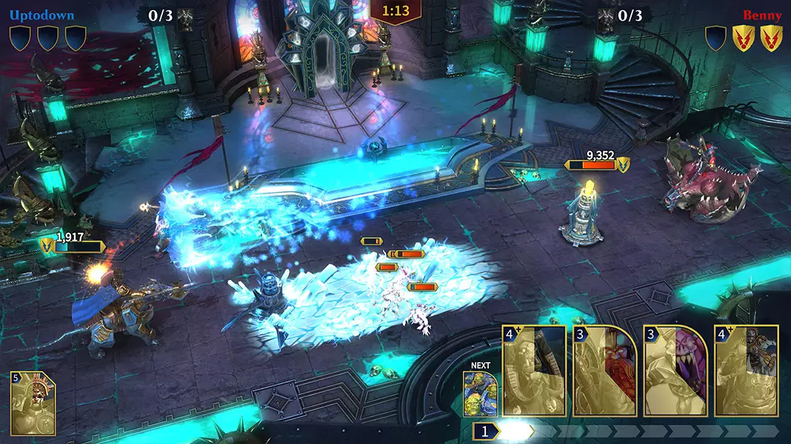
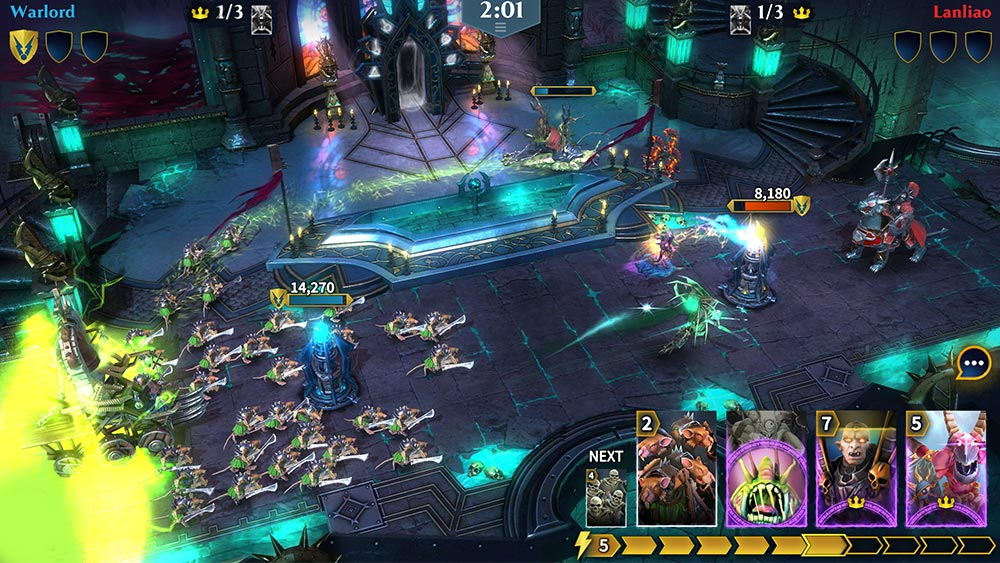
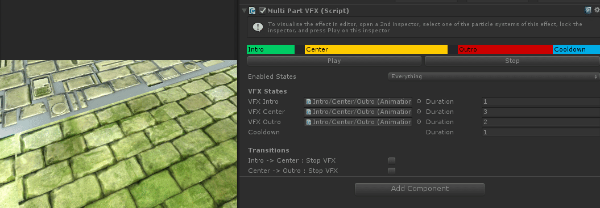
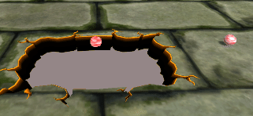
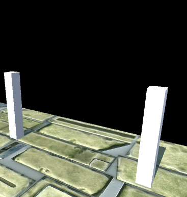

I lead part of the team to implement new units on a regular basis for montly updates, with new abilites and visual features. In this role I served both a lead gameplay engineer, scrum master and managed priorities with other disciplines like Art & Design, to deliver the content on time and on quality. I also worked on graphics effects, and the adoption of PBR material. Prior to initial release I established a scalable process to develop new units, using behaviour trees and composition-based design.



I developed some key visual effects & supporting systems for the game. A multi-phase vfx timeline system.

Depth cutouts, to create dynamic holes in the scene geometry

Electric arcs, based on fractal brownian motion noise.

Vertex animated effects